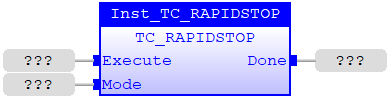
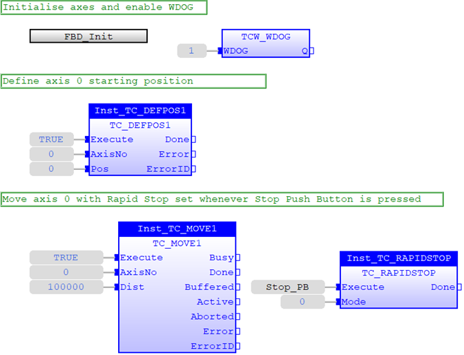
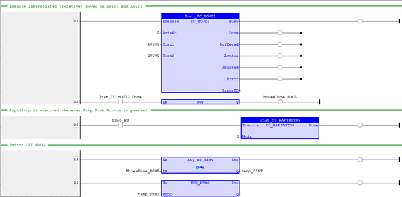

Motion Function.
Issues a new RAPIDSTOP motion request for the axis specified by 'AxisNo'.
|
Execute : BOOL; |
Rising edge requests execution |
||||||
|
Mode : USINT; |
RAPIDSTOP mode
|
|
Done : BOOL; |
TRUE when function has completed normally |
The RAPIDSTOP command cancels the currently executing move on ALL axes.
Velocity profiled moves, for example; FORWARD, REVERSE, MOVE, MOVEABS, MOVECIRC, MHELICAL, MOVEMODIFY, will be ramped down at the programmed DECEL or FASTDEC rate then terminated. Other move types will be terminated immediately.
Inst_TC_RAPIDSTOP( Execute (*BOOL*) , Mode (*USINT*) );
Program below starts with Initialisation subprogram ST_INIT. Once WDOG is enabled, axis 0 and axis 1 are set in motion with RapidStop set up when Stop push button is pressed. In this example, mode 0 is used to clear axis commands in MTYPE buffer.
// Initialise axes parameters
ST_Init
();
// Switch on WDOG
TCW_WDOG
(
1
);
// Move axis0 and axis1
(relative) 1000 units
Inst_TC_MOVE1_0(
TRUE
,
0
,
1000
);
Inst_TC_MOVE1_1(
TRUE
,
1
,
1000
);
// Activate RapidStop when Stop Push Button is
pressed
Inst_TC_RAPIDSTOP(Stop_PB,
0
);

Program below starts with Initialisation subprogram FBD_INIT. Once WDOG is enabled, axis 0 is set in motion with RapidStop set up when Stop push button is pressed. In this example, mode 0 is used to clear axis commands in MTYPE buffer.

Axes 0 and 1 are to move with interpolation; axis 0 to move 10000 units and axis 1 to move 20000 units. RapidStop is set to clear axis commands in MTYPE buffer (mode 0) when Stop push button is pressed. If the move is uninterrupted, WDOG is switched off when the move is done.
